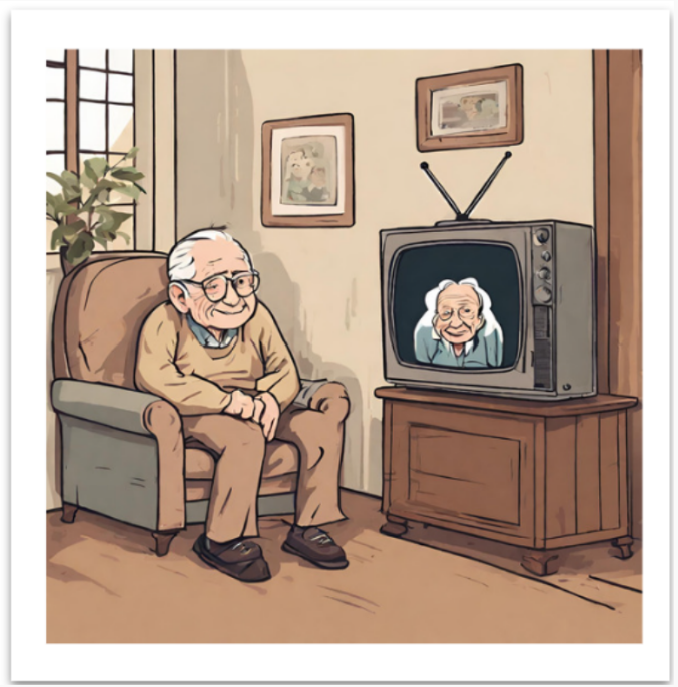

BACKGROUND
In today’s digital world, where independence is highly valued, we aim to help older adults join the digital age by creating solutions that emphasize collaboration and mutual support. The goal is to assist them in connecting with others and using technology as a shared experience, ultimately encouraging engagement and interactions with both friends and younger generations.
OBJECTIVE
Helping older adults embrace technology by supporting independence and creating shared, intergenerational experiences.
TARGET USERS
- Users aged 70-80
- They face challenges with technology and modern interfaces
- No mobility or cognitive impairments that affect their ability to learn or use interfaces
- Have a younger third party available to assist them
PROBLEM STATEMENT
"How can we encourage older adults to interact with digital creations while enjoying shared activities ?"
ITEM
Graduate Project
METHODS
Double Diamond
TOOLS
Figma
TEAM
5 people
TIME FRAME
2 months
METHODOLOGY
We applied the Double Diamond Framework using the following methods for each stage:
- Discovery: Interviews, Literature reviews, Brain writing
- Define: Data analysis, Affinity diagrams
- Develop: Brainstorming, Prototyping
- Deliver: Evaluation (Think aloud)
DISCOVERY
1- Literature Reviews
KEY FINDINGS:
- Older adults are open to digital technologies but often face anxiety and skepticism about their usefulness and ease of use.
- Designs should address diverse needs and avoid reducing users to their impairments.
- Existing technologies often focus on assistive functions but overlook social needs. There are opportunities to create designs that support connection, reciprocity, reminiscence, and independence.
CHALLENGES
- A prevalent "not-for-me" attitude toward new technologies suggests a gap in design relevance and acceptance among older adults.
- Design must address age-related issues, including visual, cognitive, movement, and hearing impairments, and consider the lack of technology experience.
OPPORTUNITIES
- The growing older population presents potential for developing personalized technology that focuses on relaxation, socialization, and mental stimulation, such as intergenerational gaming, brain-training, and virtual fitness.
2- Brain Writing
First, we individually for 5 minutes wrote down ideas based on the needs and problems of older adults. Then, we then discussed together these ideas.
KEY OUTCOMES:
Needs:
- Socializing
- Easier access to tech
- Nostalgia
Problems:
- Not well-adjusted for older adults
- Not finding tech language intuitive
- Lack of trust in tech
3- Semi-Structured Interviews
METHODOLOGY
- Phone calls: we called seven people between the ages of 70 to 80 to do the interviews.
PROCESS
- We defined 9 main questions we asked to the participants.
- Since we wanted to do it as a causal conversation, we asked more questions in relevant topics during the conversations.
KEY OUTCOMES
- Considered themselves as technologically illiterate.
- Willingness to learn
- Would like to socialize more with younger people
DEFINE
1- Affinity Diagram
- After analyzing and coding the data collected during the discovery phase, we initially organized the insights into 19 distinct categories.
- We then consolidated these into 6 broader categories by identifying and merging similar patterns.
2- Personas
3- How might we...
DEVELOP
1- Brainstorm
There were the 3 main ideas that came out during the brainstorm session:
IDEA 1 - SELECTED IDEA
Purpose: Organize and share memories with anyone who owns the product.
Aim: Help older adults to find not only the love but also the friends with same interest.
Features:
- A question related to a past memory appear in the screen.
- User scan a picture related to the topic.
- User record a voice message related to the photo.
- Photo is added to the collaborative collage.
- User can see and listen to other stories.

IDEA 2
Purpose: Create an interactive system using two interconnected TVs with video messaging.
Aim: Designed to promote companionship and socialization.
Features:
- Two interconnected TVs for seamless interaction.
- Two modes: send video message or see messages.
- Push-to-talk video messages for easy communication.
IDEA 3
Purpose: Reduce loneliness & build technology confidence.
Aim: Help older adults to find not only the love but also the friends with same interest.
Features:
- Two buttons: YES or NO.
- Camera-support (Upload profile).
- Playing collaborative game with voice call.
- Wireless connection.
- Voice & light adjustment.
- No ads.
2- Prototyping
Low-Fidelity
We sketched and created the wireframe of the idea, then made some changes because the steps to record the voice were confusing.
High-Fidelity
The high-fidelity prototype was developed in Figma, and we used it for user testing
DELIVER
1- Think Aloud
We recruited 2 people between the ages of 70 and 80 to participate in the think aloud sessions. These were the main outcomes:
CONCEPT AND USER INTEREST
- Users appreciates the concept of memory sharing.
- Older adults often have physical photo albums and enjoy looking at past photos.
- Users enjoys hearing others' stories.
- Found the product enjoyable but may not use it often.
- Believed peers more passionate about photos would be interested in the product.
INTERFACE AND USABILITY
- Simplify instructions and reduce the number of steps to record voice.
- Users liked strong colors but suggested making the button darker for better visibility.
REFLECTIONS
1- Personal Takeaways
- Interviewing older adults across different cultures showed surprising similarities in how they perceive technology, but I think we missed exploring how they want to use it for interdependence.
- I learned the importance of considering user needs, especially for older adults, who require simplified interfaces and clear guidance to navigate technology.